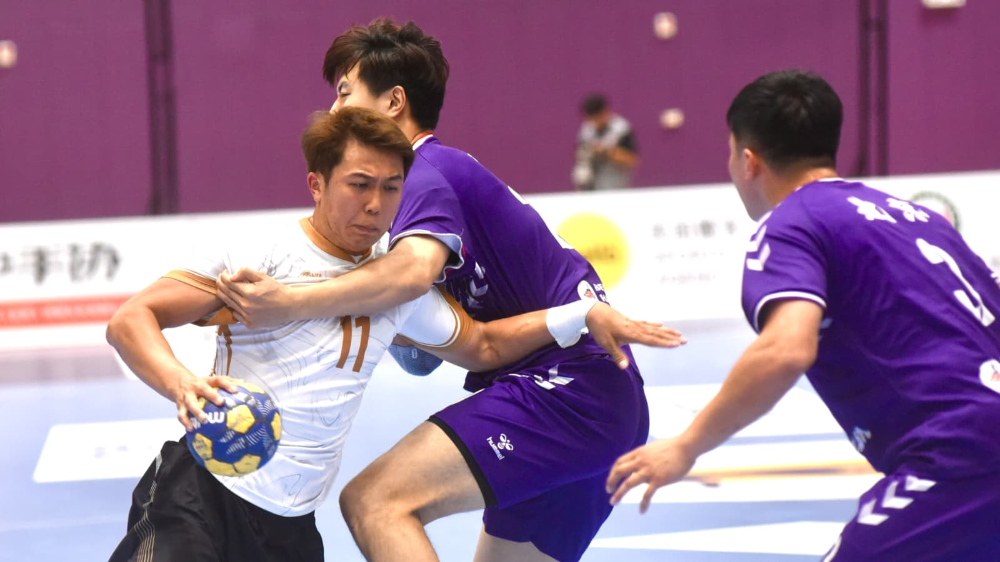

handball2026-10-26 01:20 · 中國手球超級聯賽
香港十球負北京兩連敗 中超手球總決賽爭冠路難行
Hong Kong lose 27-37 to Beijing for second straight defeat at China Handball Super League finals
香港十球负北京两连败 中超手球总决赛争冠路难行
香港手球隊在馬鞍山體育館出戰「2025-26 中國手球超級聯賽男子組第四階段總決賽」第三場，以27:37不敵北京，兩連敗後一勝兩負，爭冠路難行。連潤滔17射9中成港隊得分王，門將黃靈聰超水準演出，與北京吳昊一齊膺選今場MVP。
香港隊今日（25日）在馬鞍山體育館迎戰北京。作為賽事中唯一一支業餘隊伍，港隊延續早前對上海、安徽一戰的拚勁，憑快速轉換與堅實防守，一度追平10:10，之後被拉開至11:18，半場前追近至17:19完半場。換邊後北京逐步拉開，港隊多次突破對方防線起腳，可惜北京門將吕逢洋多次精彩撲救保住優勢，下半場中段差距已拉開到24:34，最終港隊以27:37落敗。
教練魏德甘下半場起用多位炮手，包括黃健、鍾樹賢及連潤滔上場搶分。連潤滔17次射門取得9分，已是港隊得分最多。門將黃靈聰表現超水準，與北京吳昊一齊膺選今場MVP。
同日其餘三場，江蘇與安徽合演上屆全運會決賽翻版，江蘇以21:18勝出，今屆三戰全勝；北京同樣三連勝。廣東以38:31贏U20聯隊，上海以24:22小勝山東。目前U20聯隊三場連敗，上海、安徽兩勝一負，香港一勝兩負。
賽事今日（26日）休戰一日，星期二（27日）第四輪繼續在馬鞍山體育館舉行，港隊下午5時硬撼三連勝的全運會金牌之師江蘇。港隊之後賽程：28日晚上8時對山東紫光優健、30日晚上8時對U20聯隊、31日下午2時對廣東。